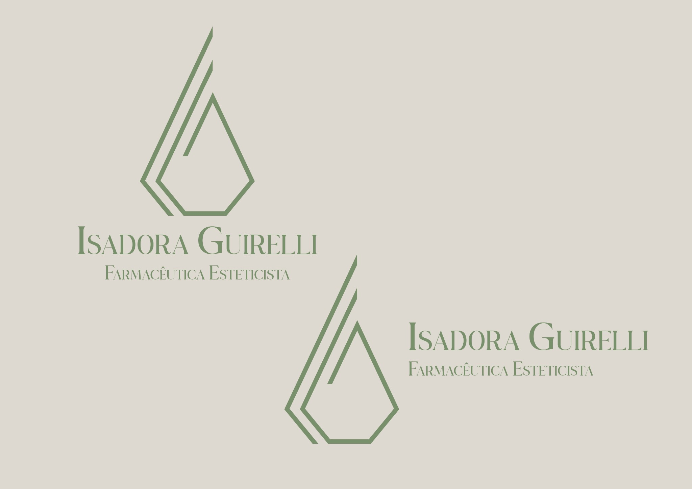
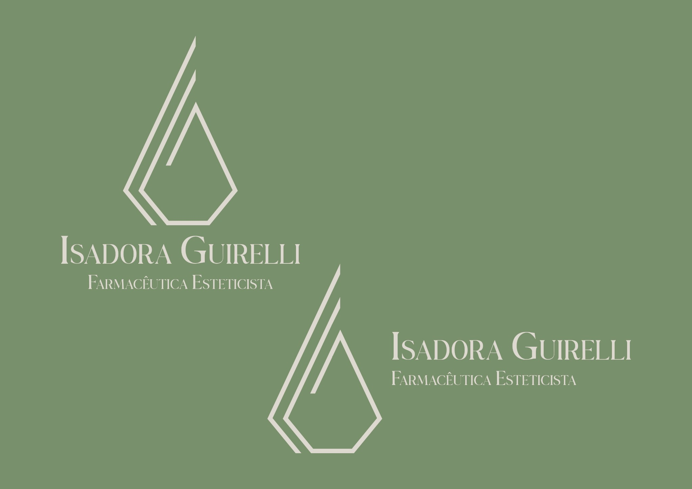
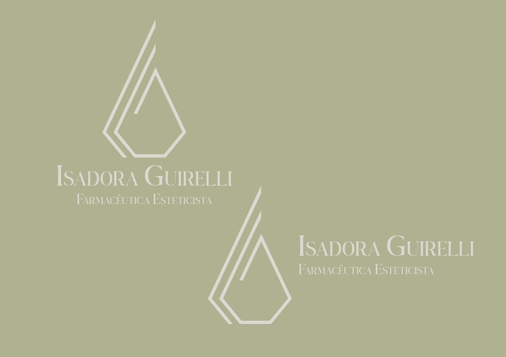
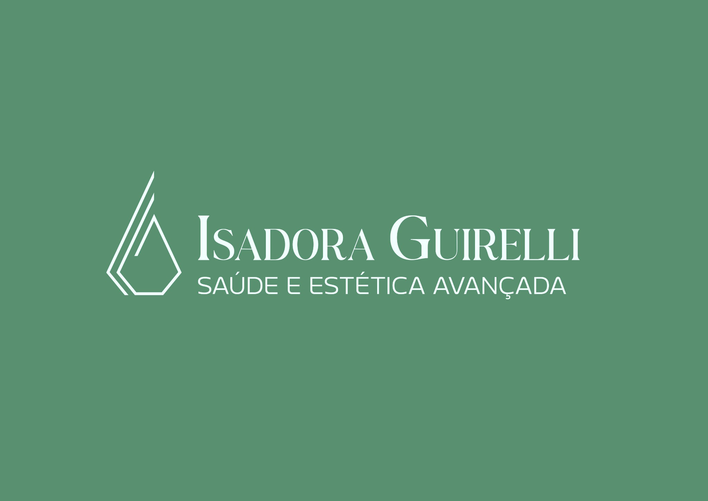

Horizontal / bege
Estudo de marca
Isadora
Isadora
Guirelli
Identidade visual para uma especialista em tricologia, construída sobre uma linguagem premium, delicada e clínica. O sistema combina símbolo minimalista, tipografia serifada e uma paleta suave para transmitir cuidado capilar, sofisticação e confiança.
Variações de logo
O sistema de logo trabalha com aplicações verticais e horizontais. A marca se adapta a fundos claros, verdes e azuis sem perder leitura, mantendo o símbolo como elemento de reconhecimento central para uma atuação ligada à saúde capilar.

Aplicação oliva
Sistema de assinaturaAplicações
As aplicações reforçam duas possibilidades de uso: uma linha mais natural e acolhedora, baseada em bege e verde sálvia, e uma linha mais institucional, com azul marinho e azul gelo para ampliar a percepção de saúde, ciência e diagnóstico capilar.

Verde saúdeTipografia
O arquivo enviado apresenta as fontes Belgiano Serif Regular e LT Wave Alt Light. No HTML, elas ficam nomeadas na hierarquia visual. Caso não estejam instaladas no ambiente do usuário, o layout utiliza Cormorant Garamond e Montserrat como equivalentes web.
Belgiano
Serif
Principal
Belgiano Serif Regular — assinatura, nome da marca e títulos de maior impacto.
Apoio
LT Wave Alt Light — subtítulos, descrições e textos de leitura curta.
Web
Cormorant Garamond + Montserrat como alternativas importadas via Google Fonts.
Paleta de cores
A paleta combina tons suaves e técnicos para equilibrar acolhimento, sofisticação e credibilidade. Os tons quentes constroem proximidade, enquanto os tons frios ampliam a percepção clínica e profissional.
Bege quente
#DECCB4
Base principal da identidade. Cria uma atmosfera suave, elegante e acolhedora.
Verde sálvia
#778F6B
Cor de assinatura da marca. Comunica naturalidade, equilíbrio e bem-estar.
Off white
#DCD8CF
Tom de respiro visual. Ajuda na leitura e mantém a apresentação limpa.
Verde saúde
#588F6F
Apoio para aplicações institucionais. Reforça cuidado técnico e presença clínica.
Azul marinho
#132950
Tom de credibilidade. Ideal para reforçar confiança, precisão e autoridade.
Azul gelo
#E2EEF0
Cor clara de apoio. Acrescenta frescor, leveza e contraste técnico.
Tom complementar
#8A9978
O verde sálvia médio complementa o sistema e pode ser usado em detalhes, fundos e elementos de transição.
Conceito visual
O conceito visual evita excesso de elementos gráficos. A força da marca está na combinação entre espaço negativo, símbolo linear e contraste suave entre tons naturais e institucionais, conectando cuidado, precisão e saúde capilar.
Sofisticação
A tipografia serifada cria uma leitura premium, com presença delicada e assinatura visual adequada para uma especialista em tricologia.
Cuidado
O verde sálvia e o bege quente aproximam a identidade de naturalidade, acolhimento e bem-estar, sem perder a percepção clínica.
Confiança
O azul marinho e o azul gelo criam uma extensão mais técnica, adequada para comunicar saúde capilar, diagnóstico e confiança profissional.
Painel da marca
Visão compacta da marca aplicada em diferentes fundos, funcionando como painel de apresentação para portfólio na área de tricologia.